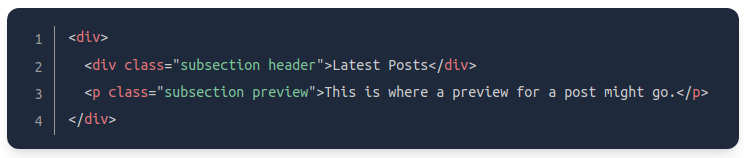

- Refer to HTML elements to which CSS Rules are applied
- selects elements of any type
- syntax is denoted with an *
- selects elements of the given element type
- syntax is denoted with the name of the element
- selects all elements of a given class, which is just an attribute you place on an HTML element.
- syntax is denoted with period . followed by the case-sensitive value of the class attribute, e.g .alert-text
- you can add multiple classes to a single element as a space-separated list
Ex: class="alert-text severe-alert"
- since whitespace is used to separate class names, you should never use spaces for multi-worded names and instead use hyphen
- selects an element with the given ID, a similar attribute to class
- syntax denoted by # folowed by the case-sensitive value of the ID attribute
- the difference between class an ID is that an element can only have one ID
- Use IDs sparingly. Instead use classes whenever possible
- IDs can be used to take advantage of specificity or having links redirect to a section on the current page.

- selects groups of elements that share the same style delcarations to cut down on repitition
- selectors are grouped together as a comma-separated list
- this allows you to chain selectors without any separation

Ex. if there are two or more elements that share the class subsection, but you'd like to apply a rule to another element that also has the header class, you can chain both class selectors like so:
- .subsection.header selects all elements that has both the subsection and the header classes
Note: you can't chain more than one type of selector since an element can't be two different types at once, e.g if subsection is under a div element and header is under a p element
- you can also chain a class and ID, e.g .subsection#preview
- one of four types of combinators, where the last selector will be selected only if they have an ancestor that matches the previous selector
- syntax denoted by space between selectors, e.g .ancestor .child
- where the selector .ancestor .child selects any or all emements with class child if it has an ancestor with the class ancestor
- the class child will only be selected if it is nested inside of the class ancestor, no matter how deep
- in this example, classes B and C will be selected, but not D because it doesn't have A as its ancestor
- color alters an element's text color, while background color alters... background color
- these properties accept one of several kinds of values
- keyword e.g red or transparent
- HEX
- RGB
- HSL
- font-family can have a single value or a comma-separated list of values. Each font can either be a "font family name" like "DejaVu Sans (quotes used due to the whitespace between words) or a "generic family name" like sans-serif
- if a browser can't find or does not support a font in a list, it will use the succeeding fonts until it finds one that it supports. This is why it's best practice to include a list of values starting with the font you'd like to be used the most
Ex. font-family: "DejaVu Sans", sans-serif;
- fon-size changes the size of the font; the value should not contain any whitespace
Ex. font-size: 22px, where there's no space between "22" and "px"
- font-weight affects boldness of the text. Values can be:
- keyword, e.g font-weight: bold
- a number between 1 and 1000, e.g font-weight: 700 (the equivalent of bold)
- text-align aligns text horizontally within an element. Keywords can be used as values:
Ex. text-align: center
Basic Typography Properties
- font-family
- font-size
- font-weight
- text-align
- an img element's height and width will be the same as the image's actual height and width. If you want adjust the image's size without losing its proportions, use the value auto for the height property and adjust the width like so:

- it's a good idea to always explicitly state height and width values because it "reserves" the space on the page and keeps the content from shifting around in case the image is slow to load in
- the cascade determines which rules actually get applied to HTML elements based on different factors
- determining which rules are applied is based on a hierarchy of specificity, summed up by:
*, as well as combinators +, -, < or >, and an empty space have no specificty value- specificity will only be taken into account when there are multiple conflicting declarations on the same element
- when no declaration has a selector with a higher specificty value, the rule that gets applied will be determined by the selector that has a larger amount, as illustrated below:
- in this example, both rules use class selectors, but rule 2 is more specific because it uses more class selectors, in which case rule 2 would take precedence
- in this example, despite rule 2 having more class selectors, rule 1 still takes precedence because it uses an ID selector
- in this third example, even though both rules have ID selector #subsection, rule 2 would take precedence, as it has a larger amount of selectors than rule 1
- while the declaration color: red would take precedence over color: blue, rule 1's background-color: yellow declaration will still be aplied because there's no conflicting declarations for it
- rule 1 has a chain selector, while rule 2 has a descendant combinator, but both rules have the same specificity values. The combinator symbol (i.e empty space) does not add any specificity value
- the child combinator (>) does not add any specificity. Rules 1 and 2 have the same specificity values
- in this example, rule 2 would take precedence because it uses a type selector over rule 1's universal selector *. Despite type selectors having the lowest specificity value, it still has more over the universal selector * which has no specificity value.
- refers to properties that, when applied to an element, are inherited by said element's descendants, even if rules aren't explicity written for those descendants. Typography properties (e.g color, font-size, font-family, etc.) are usually inherited
- an exception to this is when directly targeting an element, as this always beats inheritance:
- despite the parent element having a higher specificity as an ID, the child element would still have the color: blue declaration applied to it since it directly targets it, which overrides the inherited color: red declaration from parent.
- The final factor. If all other factors have been taken into account, and there are still conflicting delcarations, the cascade determines which rule to apply based on the last rule that was defined
- for an element that has both the alert and warning classes, the cascade would consider the follwing factors:
- since the .warning rule was declared last, and no other cascade factor applies, it will be the rule that is applied
- ways to add CSS to your HTML
- where you create a separate file for the CSS, linking it inside the HTML's <head> element using a <link>:
- the href attribute is the location of the CSS file. It can either be: absolute or relative. In this example where a relative URL is used, the CSS and HTML files are in the same directory.
- The rel attribute specifies the relationship between the HTML file and the linked file.
- The contents of styles.css are broken down as follows:
div and pcolor: white;Pros of the External CSS method:
- adds the CSS within the HTML file itself. All rules are placed inside opening and closing <style> tags, which are inside the <head> tags. Because the CSS is alreaedy contained inside the <head> tags within the HTML file, we don't need the <link> element anymore that's used in the external method
- the Internal CSS method is useful for applying styles that are specific to a single page of a website
- adds styles directly to and within the HTML elements themselves
- the inline method doesn't use selectors. Instead, the attribute style= is used, and the declarations are contained inside quotation marks "". The inline method can be useful if you want to apply a unique style to a single element. But other than that, the inline method isn't ideal for these reasons: